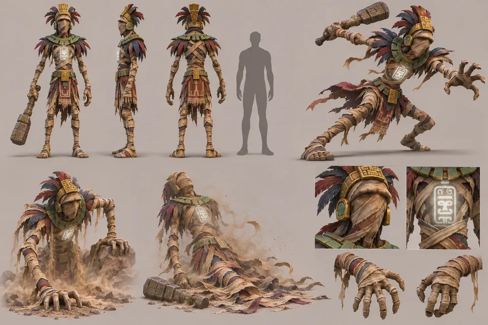
Base enemy · from the Shell
Risen Guardian
A cursed priest in paper-brown wrappings with a cracked stone club. Shambles, relentless and without reason.
Home / Characters
Characters
Bats, leeches, scarabs, archers, panthers, sentries, a ghost you can only outrun, and the bosses of the tiers.
Enemies
Eerie and characterful rather than gory. Every enemy is built to read clearly at third-person range, and their numbers grow with the size of the party.

Base enemy · from the Shell
A cursed priest in paper-brown wrappings with a cracked stone club. Shambles, relentless and without reason.
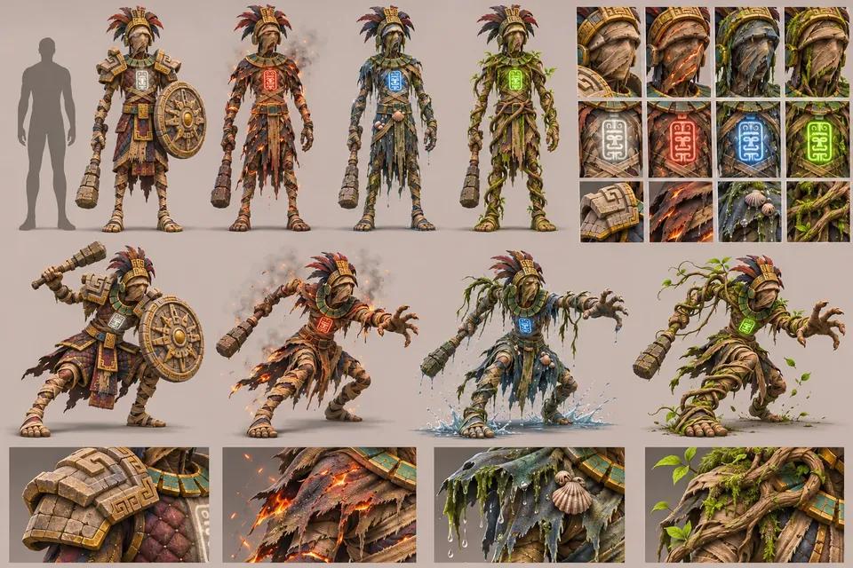
Temple's Wrath variants · Tier VI
Armoured, ember-cursed, drowned and root-bound versions of the same body, each with its own sigil colour.
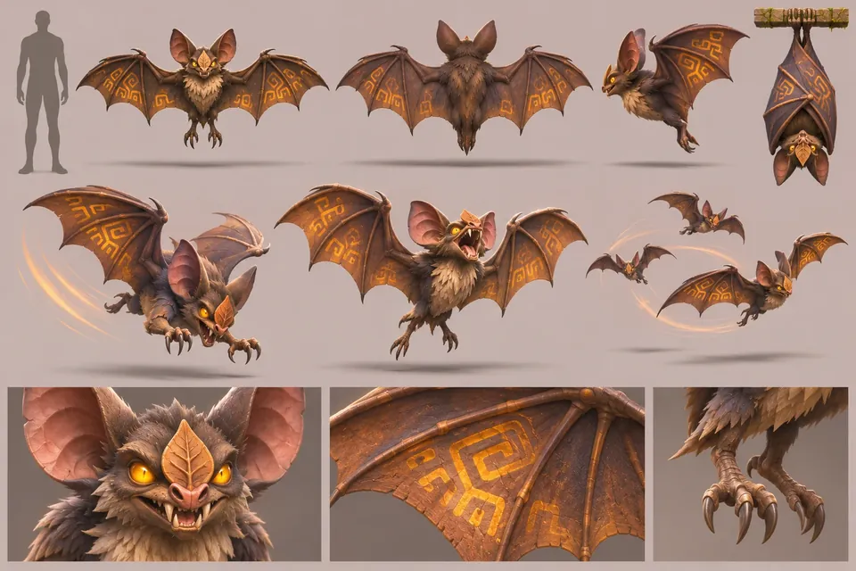
Erratic flyer · Tier I and IV
A crow-sized leaf-nosed bat with glowing amber eyes. A little comical, very annoying.
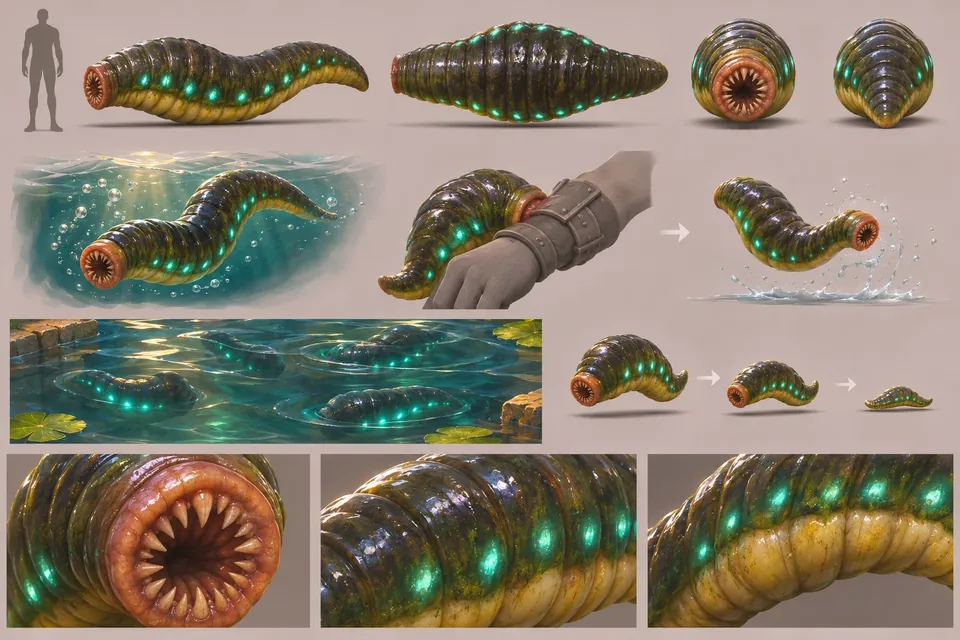
Water hazard · Tier I
Glossy, fat and gross-cute, with teal spots that glow as a warning just under the surface.
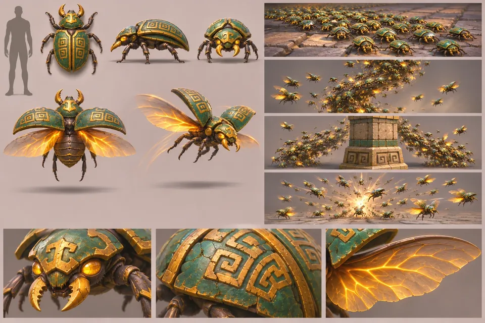
Swarm · Tier II and IV
Jade-and-bronze beetles that flow across the floor like a carpet and rise as a buzzing column.
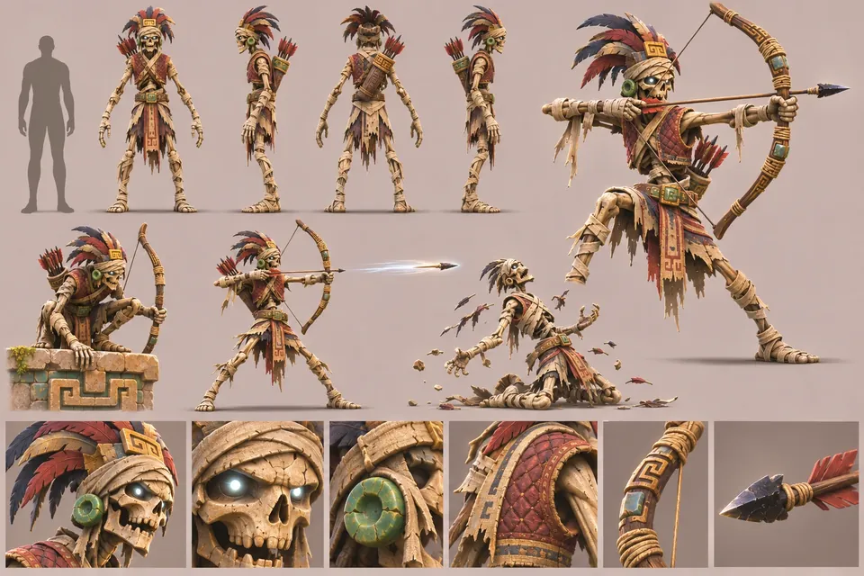
Ranged · from Tier II
A dry skeletal warrior with an obsidian-tipped bow who holds the ledges.
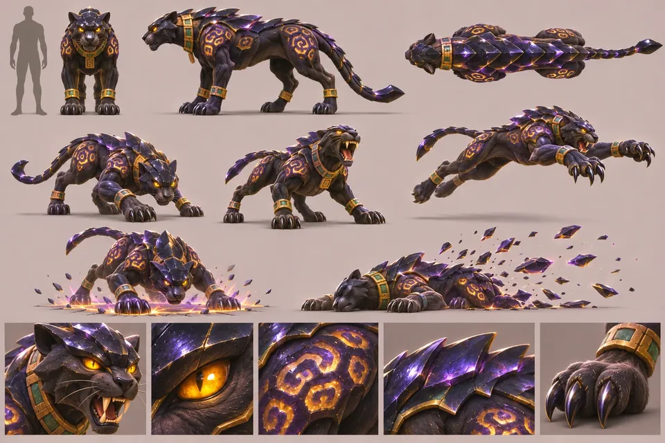
Fast flanker · Tier II and IV
A black jaguar plated with volcanic glass, rosettes glowing violet-gold from within.
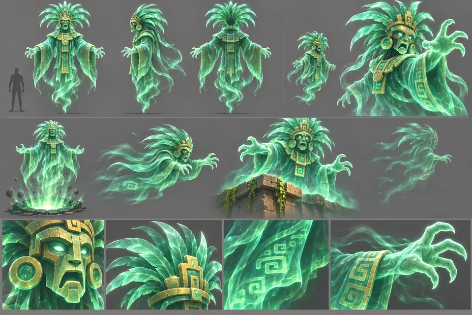
Unkillable chaser · Tier II and V
A five-metre ghost priest of green spirit light. You cannot fight it. You can only run.
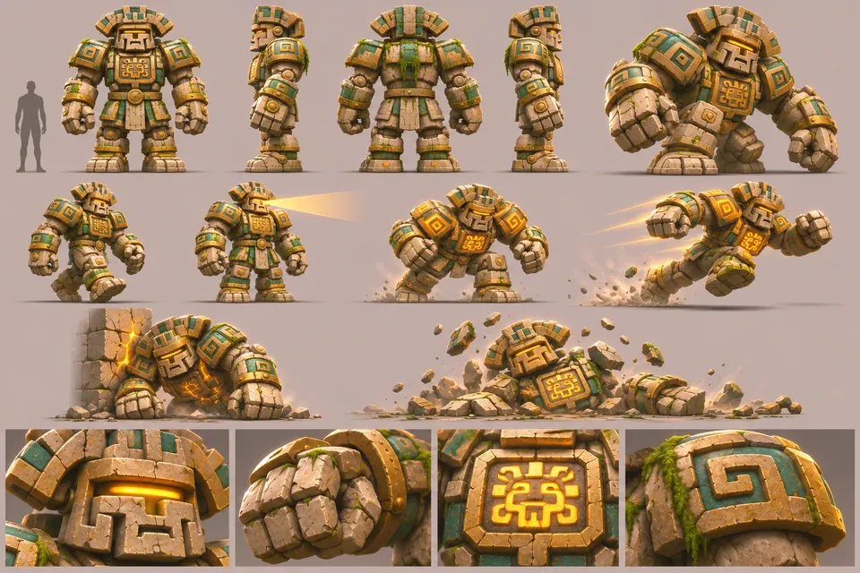
Heavy · from Tier III
A living statue whose amber eye-slit sweeps the room before it charges.
Bosses
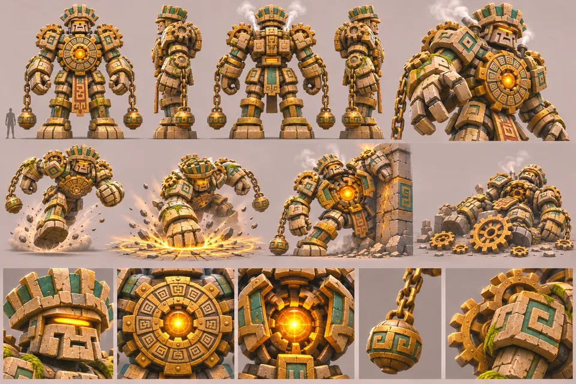
Tier III boss
A nine-metre construct of carved blocks and turning gears around a blazing amber core.
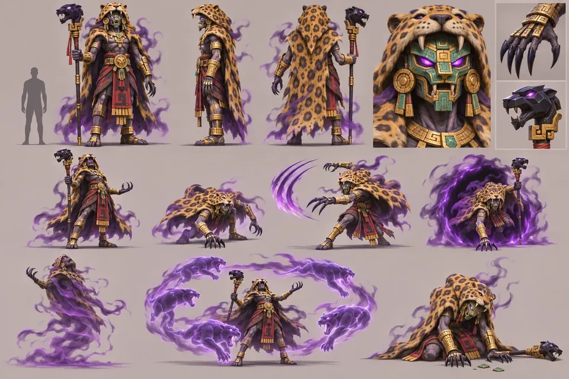
Tier V boss
A shadow-walking priest in a jaguar pelt who phases between carved totems.

Tier VI mini-boss
An armoured warrior-priest with an eagle helmet and an obsidian spear, guarding the Sun Orb vault.
The final boss waits on the summit: The Hollow High Priest →
Named guardians
In the game they return as elite enemies, once per tier, each with its own sigil and one gift of the curse.
Ideas for later
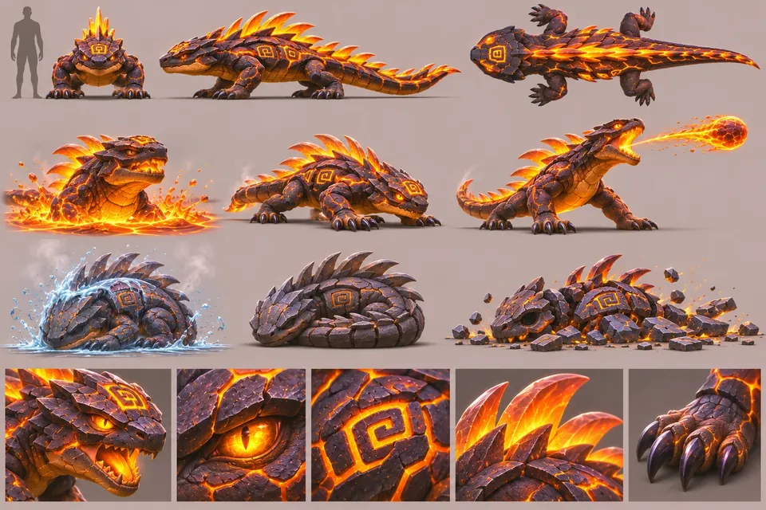
Proposed · fire floors
Swims through lava, spits molten rock, and hardens when splashed with water.
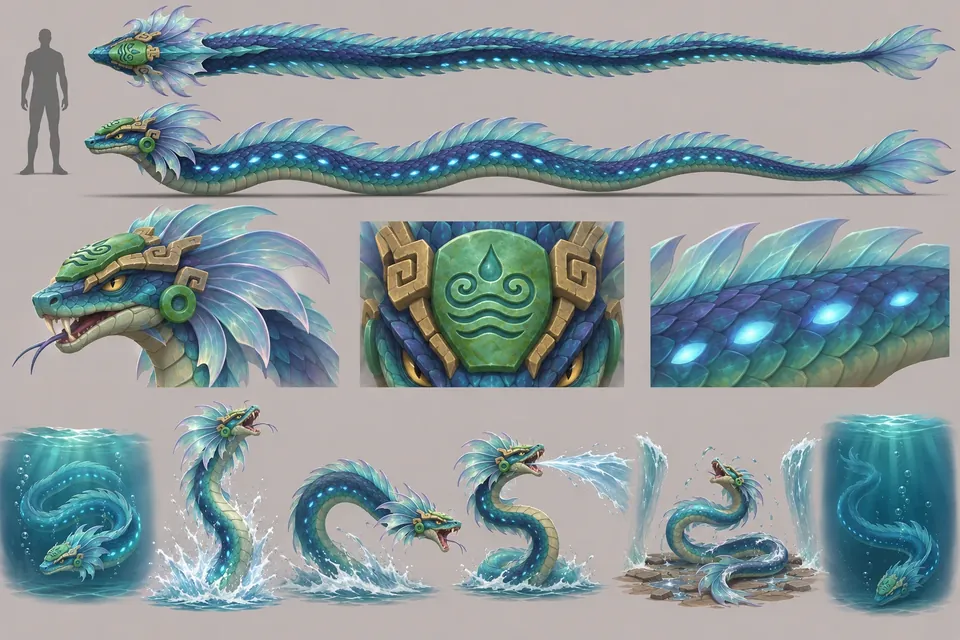
Proposed · water floors
A turquoise eel-serpent that strikes from deep water and is stranded when the water parts.
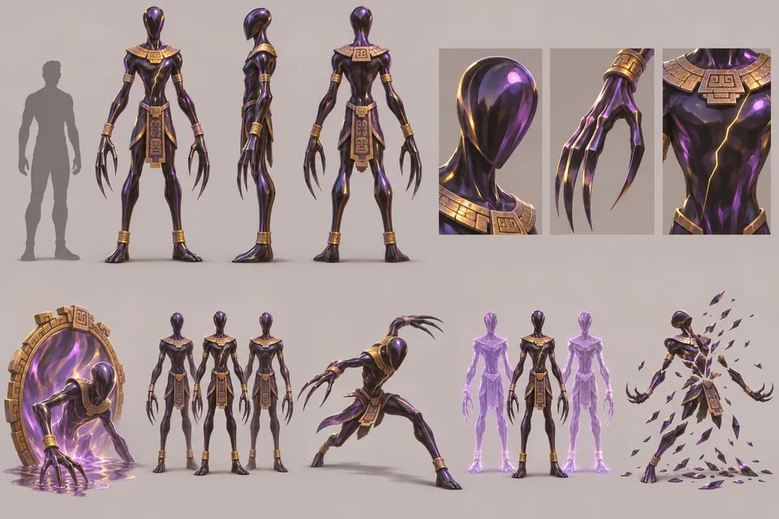
Proposed · illusion floors
A faceless obsidian humanoid that splits into copies; only the real one has a gold crack.
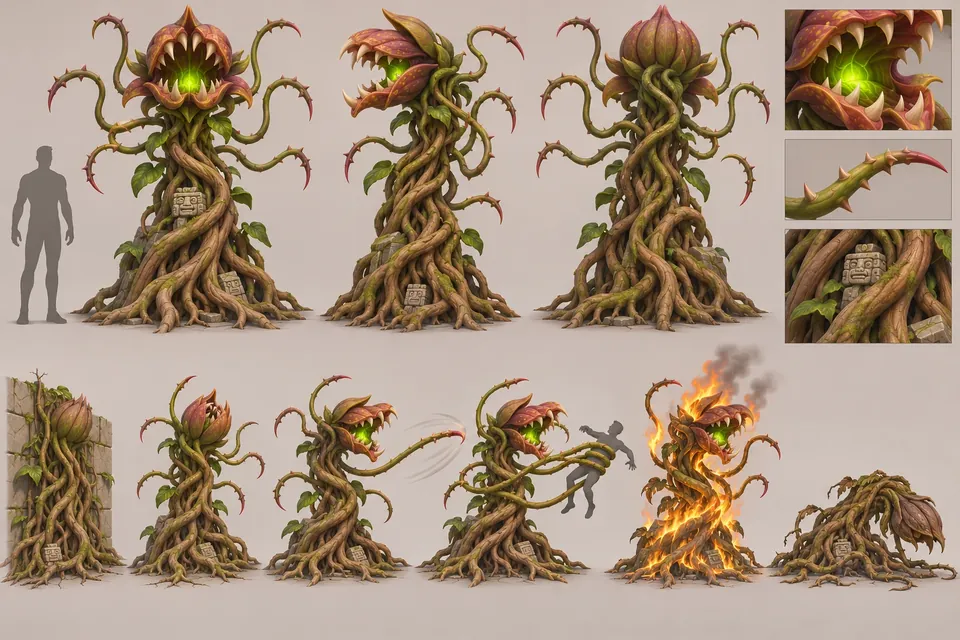
Proposed · root floors
Looks like ordinary roots until the flower-mouth opens. Burns beautifully.